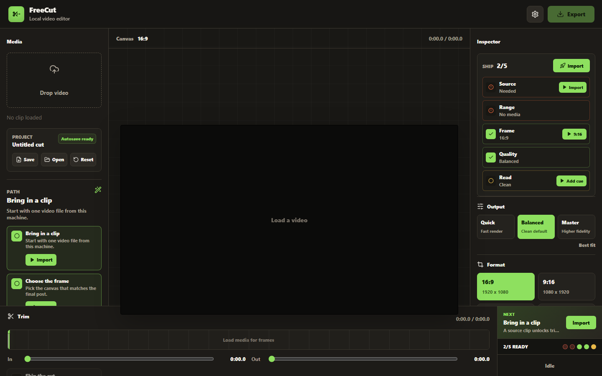

Import
Load one local video, preview it, play it, seek through it, and keep project settings in browser storage.
A local-first, open-source short-form video editor for trimming, resizing, captioning, checking, and exporting clips without subscription gates.

The editor focuses on the practical short-form path: bring in one clip, trim it, reframe it, style captions, check it, and export locally.
Load one local video, preview it, play it, seek through it, and keep project settings in browser storage.
Set trim points on a media-aware thumbnail timeline, choose the export aspect ratio, and reframe the crop focus.
Add a text overlay, timed captions, SRT/VTT imports, and compact caption style presets for short-form publishing.
Run a guided preflight, review the render summary, pick Quick, Balanced, or Master quality, then export MP4 through FFmpeg.
Import and export `.freecut.json` projects, then relink the source clip when restoring a saved project.
Check whether the clip, trim, captions, overlay, aspect ratio, quality settings, and estimated output size are ready to ship.
Move the export frame horizontally or vertically before rendering vertical, square, or portrait clips.
Use timed captions directly in the editor, import SRT/VTT caption files, and choose Clean, Bold Box, or Shorts Pop styling.
Keep recent session exports visible with filename, size, timestamp, frame, profile, and download access.
The first public release is live with CI, contribution files, security reporting, and import-transition smoke coverage.
git clone https://github.com/Martin123132/freecut.git
cd freecut
npm ci
npm run dev